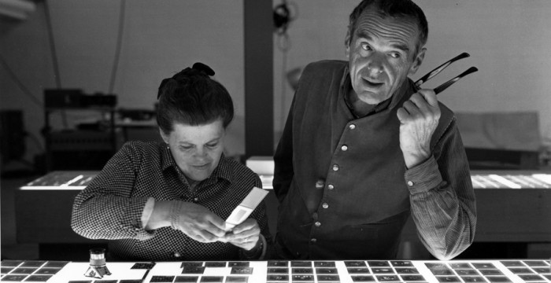

The Eameses are best known for their groundbreaking contributions to architecture, furniture design, industrial design and manufacturing, and the photographic arts. Charles Eames was born in 1907 in St. Louis, Missouri. He attended school there and developed an interest in engineering and architecture. After attending Washington University in St. Louis on scholarship for two years and being thrown out for his advocacy of Frank Lloyd Wright, he began working in an architectural office. In 1929, he married his first wife, Catherine Woermann (they divorced in 1941), and a year later Charles’s only child, Lucia was born. In 1930, Charles started his own architectural office. He began extending his design ideas beyond architecture and received a fellowship to Cranbrook Academy of Art in Michigan, where he eventually became head of the design department. Ray Kaiser Eames was born in 1912 in Sacramento, California. She studied painting with Hans Hofmann in New York before moving on to Cranbrook Academy where she met and assisted Charles and Eero Saarinen in preparing designs for the Museum of Modern Art’s Organic Furniture Competition. Charles and Eero’s designs, created by molding plywood into complex curves, won them the two first prizes. Charles and Ray married in 1941 and moved to California where they continued their furniture design work with molding plywood. During World War II they were commissioned by the United States Navy to produce molded plywood splints, stretchers, and experimental glider shells. In 1946, Evans Products began producing the Eameses’ molded plywood furniture. Their molded plywood chair was called “the chair of the century” by the influential architectural critic Esther McCoy. Soon production was taken over by Herman Miller, Inc., who continues to produce the furniture in the United States today. Our other partner, Vitra International, manufactures the furniture in Europe. In 1949, Charles and Ray designed and built their own home in Pacific Palisades, California, as part of the Case Study House Program sponsored by Arts & Architecture magazine. Their design and innovative use of materials made the House a mecca for architects and designers from both near and far. Today, it is considered one of the most important post-war residences anywhere in the world.
About Charles and Ray Eames
